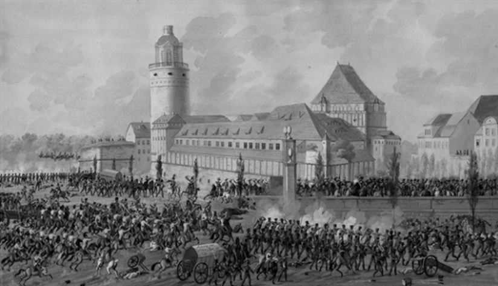
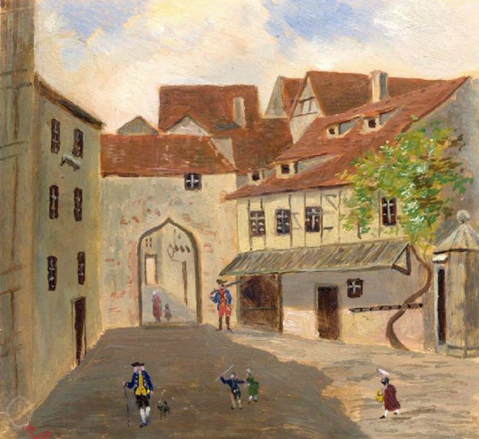
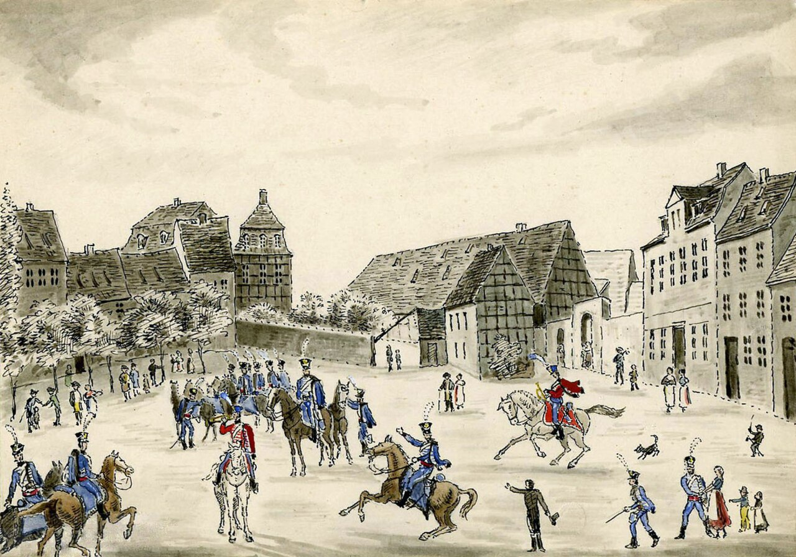
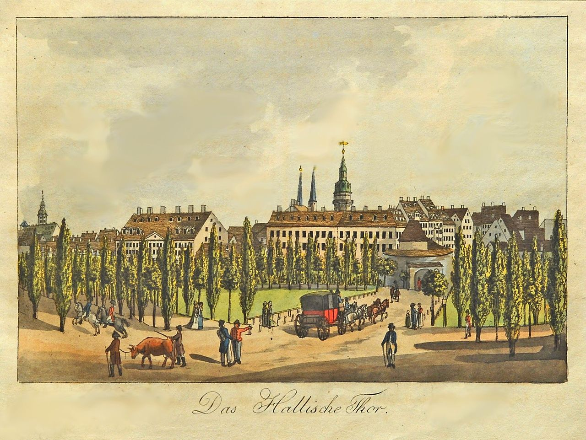
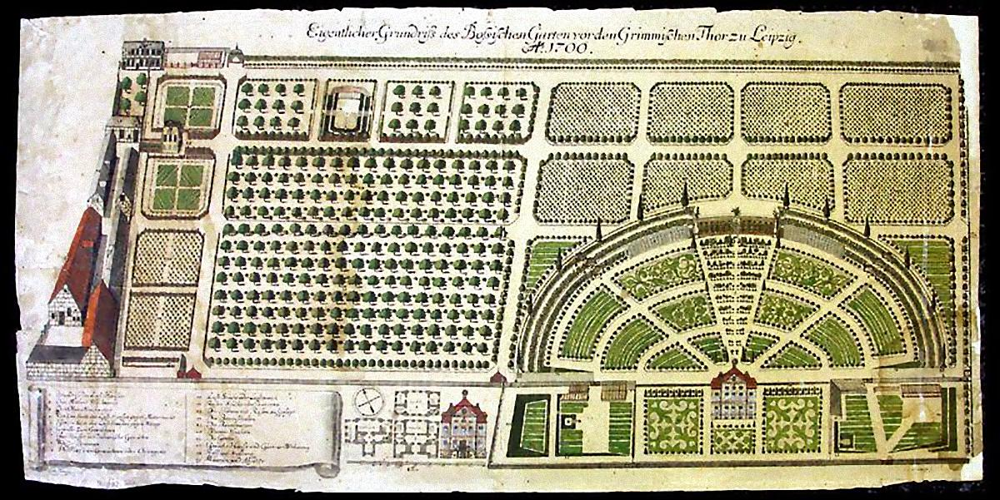
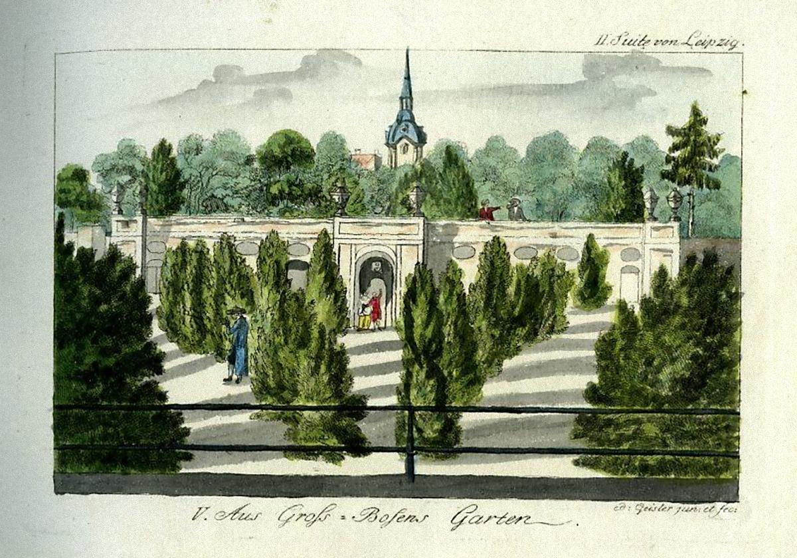
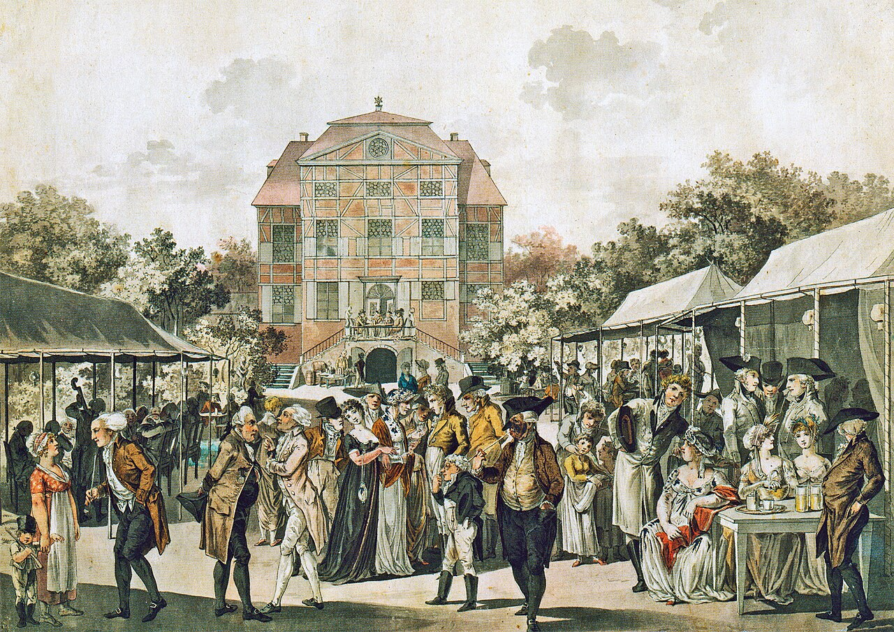
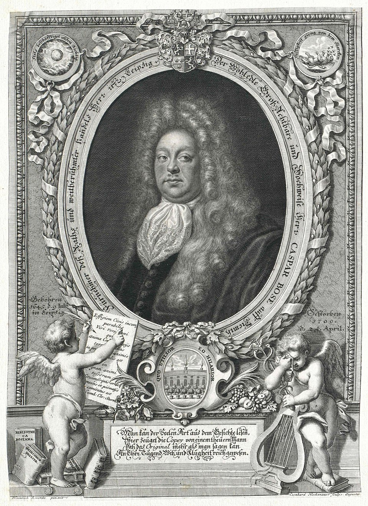
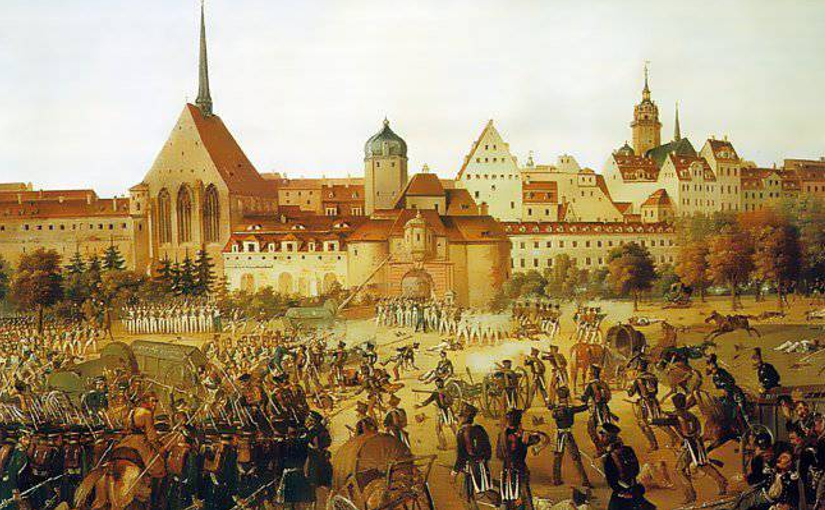
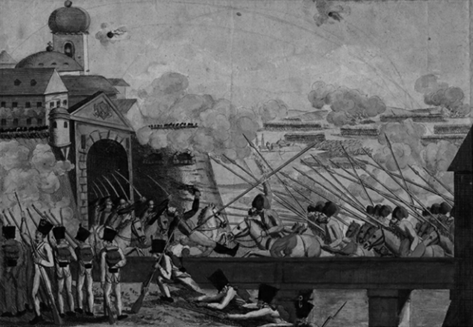

라이프치히 전투 (40) - 19개의 성문
게시: 2026-03-30T06:30:19+09:00
10월 19일 연합군의 라이프치히 시내로의 공격은 아침 7시~8시 사이에 시작되었습니다. 라이프치히를 둘러싼 연합군은 워낙 긴 전선에 걸쳐 늘어져 있었고, 각각의 부대가 당면한 전선 상황도 달랐기 때문에 이 공격은 제 시간에 맞춰 일제히 시작되지 않았고, 드문드문 시간차를 두고 개시되었습니다. 가령 베르나도트 휘하의 뷜로는 아침 7시부터 공격을 시작했으나, 블뤼허의 북부 방면군의 공격은 시작이 매우 늦어 오전 8시경에나 파르터 강을 건넜고, 오전 10시반 경에나 제대로 공격을 시작할 수 있었습니다. 그러니까 평소에 느리기 짝이 없던 베르나도트의 공격이 가장 빨랐고, 반면에 베르나도트는 프랑스와 내통하는 것이 틀림없다고 근거 없는 비방을 늘어놓던 블뤼허의 공격이 가장 느리고 부실하게 진행된 것입니다. 각 부대의 공격 방향은 대충 아래와 같았습니다. 콜로레도의 오스트리아군 - 페터 성문 (남쪽) 비트겐슈타인의 러시아군 - 모래 성문과 풍차 성문 (남동쪽) 베니히센의 폴란드 방면군 - 병원 성문 (동쪽) 베르나도트의 북부 방면군 - 그리마 외성문 (북동쪽) 블뤼허의 슐레지엔 방면군 - 할러 외성문 (북쪽~북서쪽)

(1813년 당시 라이프치히의 내성문과 외성문의 위치입니다. 각 성문의 이름은 아래와 같습니다. [Inner City Gates / 내성문] 1. Grimmaisches Tor (그리마 성문) 2. Peterstor (페터 성문) 3. Ranstädter Tor (란슈테트 성문) 4. Hallisches Tor (할러 성문) 5. Thomaspförtchen (토마스 소성문) 6. Barfußpförtchen (맨발 소성문) 7. Hallisches Pförtchen (할러 소성문) 8. Georgenpförtchen (게오르그 소성문) 9. Schlosspforte (궁전 성문) [Outer City Gates / 외성문] 10. Äußeres Grimmaisches Tor (그리마 외성문) 11. Hospitaltor (병원 성문) 12. Sandtor (모래 성문) 13. Windmühlentor (풍차 성문) 14. Äußeres Peterstor (페터 외성문) 15. Münztor (주조창 성문) 16. Äußeres Ranstädter Tor (란슈테트 외성문) 17. Rosentaltor (로젠탈 성문) 18. Äußeres Hallisches Tor (할러 외성문) 19. Hintertor (후면 성문) 각 성문에는 나름 재미있는 이름이 붙었는데, 가령 2번 페터 성문은 인근에 성 베드로 교회(Peterskirche)가 있었기 때문이었고, 13번 풍차 성문은 그 바로 밖에 여러 개의 풍차가 있었기 때문이었습니다. 15번 주조창 정문은 근처에 동전을 찍어내던 주조창(Münze)이 있었기 때문에 그런 이름이 붙었고, 나폴레옹이 탈출로로 사용한 3번 란슈테트 성문은 그 문으로 나가면 마르크란슈테트(Markranstädt)가 나오기 때문에 그런 이름이 붙었습니다.) 적어도 오전까지의 전투는 소리만 요란했고 사상자 수가 많지는 않았습니다. 아직 탈출하지 않고 후위 역할을 하던 그랑다르메 부대들이 새벽녁에 최전선에서 물러나 라이프치히 외성 안쪽으로 후퇴한 뒤 성문 주변에 베치한 포병 위주로 반격한데다, 그 뒤를 추격하는 연합군도 그에 대해 무리하게 보병을 투입하여 강행 돌파하기 보다는 먼저 포병대를 내세워 그랑다르메의 포병들과 대결을 벌였기 때문이었습니다. 연합군에게는 나폴레옹에 대한 1승이 중요했고, 그랑다르메에게는 무사 탈출이 중요했으므로 양측 모두 격렬한 투지를 불태우지는 않았습니다. 성벽을 장악하고 있는 그랑다르메가 수비에 있어 매우 유리할 것 같았지만, 그게 연합군에게 결정적인 장애물이 되지는 않았습니다. 어차피 라이프치히의 성벽은 11~13세기에 지어진 낡은 것이라서 보방(Vauban)식 요새와는 달리 근대적인 포격전에 대해서는 별 도움이 되지 않았고, 그나마 1813년 당시에는 이미 상당부분이 철거되어 건물들로 대체된 상태였습니다. 방어에서 중요했던 것은 주요 진입로인 기존의 성문들로서, 이 전투의 핵심은 성문 주변에 배치된 그랑다르메의 포병대를 포격으로 제압한 뒤에 성문을 통해 보병과 기병들이 진격하도록 하는 것이었습니다. 그런 점에서 훨씬 더 막강한 포병 화력을 가진 연합군이 절대적으로 유리했으므로, 연합군도 무리하여 서두르지 않았습니다. 그래서 곳곳에서 1~2시간씩 포격전이 벌어졌고, 양측 보병들 간의 유혈 충돌이 격렬하게 벌어지지는 않았습니다.

(1813년 10월 19일, 페터 성문을 둘러싸고 벌어진 전투의 모습입니다.)

(1750년대에 그려진 Barfußpförtchen(맨발 소성문)의 모습입니다. 바르푸스(Barfuß, 맨발)은 탁발 수도회인 프란치스코 수도회를 뜻하는 것으로서 인근에 프란치스코 수도원(Barfüßerkirche)이 있어 이런 이름이 지어졌습니다. 독일어에서 Tor는 큰 성문, 대문을 말하고, Pförtchen는 이런 작은 쪽문을 뜻합니다.)

(1812년 당시의 Windmühlentor(풍차 성문)의 모습입니다. 이미 성벽은 사실상 사라졌고, 대신 육중한 건물들이 벽 역할을 하고 있는 것을 보실 수 있습니다.)

(1804년 당시의 Hallisches Tor(할러 성문)의 모습입니다. 이 이름은 당연히 할러(Halle)로 가는 대로로 통하는 성문이라서 붙은 것입니다.) 그렇게 슬슬 전투가 뜨거워지던 오전 10시 경, 바로 전날까지 나폴레옹의 사령부였으나 아침에 재빨리 알렉산드르의 사령부가 된 콴트(Quandt) 담배 공장 인근 장소에 약간 엉뚱하지만 예상되었던 손님이 찾아왔습니다. 라이프치히 시청에서 보낸 사절단이었습니다. 당시엔 도시가 함락되기 전에 시장이 도시 성문의 열쇠를 상징으로 들고 나와 정복군에게 항복하는 것이 상식이었습니다. 그러나 알렉산드르의 사령부에서 이들은 그다지 환영받는 분위기는 아니었습니다. 이들이 들고온 것은 그랑다르메의 수비대가 평화롭게 철수한다는 조건이 붙은 항복이었던 것입니다. 자신들의 완승이 확실한 상황에서 이건 그다지 매력적인 조건이 아니었습니다. 실제로도 이 사절단은 라이프치히의 작센 공무원들이 자발적 의지로 보낸 것도 아니었고, 이미 라이프치히를 탈출한 나폴레옹이 단지 시간을 끌기 위해서 지시한 바에 따라 온 것이었습니다. 이 사절단에 이어, 작센 국왕 아우구스투스가 보낸 폰 리셀(Anton Friedrich von Ryssel) 대령도 나타나 '부디 이 유서 깊은 도시를 보존해달라'는 아우구스투스의 탄원서를 전달했습니다. 이것도 역시 나폴레옹의 지시에 따른 것이었습니다. 알렉산드르와 프로이센의 프리드리히 빌헬름은 체면상 이들을 완전히 무시할 수가 없었으므로, 30분 휴전을 발표하고 협상단을 라이프치히 시내로 들여보냈습니다. 당연히 이 협상은 아무 성과도 내지 못했습니다. 어차피 라이프치히에서 버티던 그랑다르메는 라이프치히 시장이 아니라 막도날과 포니아토프스키 등 프랑스 원수들의 명령하에 있었기 때문이었습니다. 그러나 30분 간의 짧은 휴전 기간이 나폴레옹에게만 시간을 벌어준 것은 아니었습니다. 연합군도 전술적 상황에 따라 이 시간 동안 이리저리 병력과 포병대를 이동시켰습니다. 가령 베니히센은 오전 내내 라이프치히 남동쪽 보저 정원의 담장에 대고 포격을 가해 벽을 뚫으려 했으나, 포탄이 얇은 담장을 깔끔하게 관통하기만 하고 무너뜨리지 못해 골치를 앓고 있었습니다. 그는 이 짧은 휴전 동안 공병들을 이용해 이 담장에 폭약을 설치했고, 휴전 시간이 끝나자마자 벽을 폭파하고 진입했습니다. 물론 그랑다르메도 그 사이에 내성으로 철수했으므로 큰 충돌은 없었습니다.

(당시 라이프치히에서 매우 유명했던 보저 정원(Bosischer Garten)은 바로크 양식의 정원으로서, 17세기 라이프치히의 유명한 귀금속 상인이었던 보저(Caspar Bose)가 만든 것입니다. 라이프치히 남동쪽 외곽에 있었습니다.)

(당시엔 이미 라이프치히가 군사적 요새로서의 가치는 없어진 상황이라서 성벽 등이 철거되기 시작했으므로, 남동쪽 모래 성문과 풍차 성문 사이에 생긴 공간을 보저가 사들이고 바로크 양식의 정원을 만든 것입니다. 역설적으로, 이 정원의 담장이 이 그림에 묘사된 것처럼 꽤 높았으므로 이 담장이 연합군의 진격을 막아서는 군사적 장애물 역할을 했습니다.)

(보저 정원의 가치는 단지 여기가 바로크 양식으로 돈 많이 들여 만든 공간이기 때문이 아닙니다. 이 정원은 보저의 사유 재산이었지만, 보저는 시민들에게 이 공간을 개방하여 여기서 위 그림에 표현된 것처럼 음악 공연 등 많은 사회적 교류가 일어나도록 했고, 덕분에 라이프치히의 발달을 더욱 촉진시켰습니다.)

(이 초상화 속 인물이 보저 정원을 만든 카스파 보저입니다. 다만 보저 정원의 유지보수에는 워낙 많은 돈이 들어갔으므로 보저 가문 혼자서 가꾸기에는 힘이 벅찼습니다. 1800년 이후 보저 정원은 황폐화되기 시작했고 1813년 라이프치히 전투 때는 이미 반쯤 버려진 상태였습니다. 결국 1824년 보저 가문의 마지막 소유주였던 요한나 엘레오노레 보저(Johanna Eleonore Bose)가 정원의 마지막 부지들을 매각하면서 사실상 보저 정원은 사라지게 되었습니다.) 이 짧은 휴전은 베르나도트 휘하의 스웨덴 사단에게도 중대한 영향을 끼쳤습니다. 프로이센놈들 목숨은 아무도 아끼지 않는다는 정신으로 어제부터 줄창 뷜로의 프로이센 군단만 앞세우던 베르나도트는 오늘 아침에는 그랑다르메가 별다른 저항을 하지 않고 후퇴하려 한다는 확신이 들자, 이 휴전 동안 후방의 스웨덴 사단을 불러와 시내에 투입하여 '스웨덴 사단이 선두에 선다'라며 생색을 낸 것입니다. 당연히 이들은 큰 충돌 없이 시내에 진입했고, 사상자도 매우 적었습니다. 그러나 그리마 외성문 방면에서 전진하던 뷜로의 프로이센 군단은 그런 와중에도 정말 재수가 없었는지, 하필 굳은 항전 의지를 가진 마르몽과 부딪혀 치열한 시가전을 벌였고 꽤 많은 사상자를 냈습니다. 운명의 장난인지, 하필 또 베르나도트는 스웨덴 사단이 아니라 이 그라미 성문에 있던 뷜로 휘하 콜베르크(Kolberg) 연대와 함께 있었고, 성문 바로 옆 성 요하니스(St. Johannis) 병원 건물에서 쏟아지는 프랑스군의 탄환 세례를 뒤집어 썼습니다. 당황했던 베르나도트는 프로이센 병사들에게 프랑스어로 돌격하라고 외쳤다고 합니다. 여기서부터는 매우 격렬한 시가전이 벌어져 양측에서 사상자가 많이 났고, 여태까지 눈칫밥을 먹으며 호강하던 스웨덴 사단조차도 사상자를 내며 혈전에 돌입했습니다. 심지어 그랑다르메의 반격에 쫓긴 연합군은 기껏 들어온 병원 성문까지 밀려나기도 했습니다. 그러나 당연히 결과는 이미 정해져 있는 것이나 다름 없었습니다. 정오 이전에 베르나도트 및 베니히센의 부대들은 외성 안쪽의 교외 지역을 모두 점령하고 라이프치히 내성에 도달할 수 있었습니다.

(10월 19일 오전, 그리마 성문에서의 전투 모습입니다. 프로이센군은 바리케이드로 막힌 그리마 성문을 열지 못했고 성 요하니스 병원도 점령하지 못했지만, 길을 막은 건물 벽 중 약한 부분을 파악한 병사들이 개머리판으로 그 벽을 부수고 길을 뚫어 진입에 성공했습니다.) 블뤼허가 맡은 북쪽 할러 성문의 경우엔 더욱 진격이 어려웠습니다. 그쪽은 그랑다르메의 탈출로인 서쪽 란슈테트 성문과 가까웠으므로 그만큼 저항이 심했는데, 거기에 더해 공격하는 측은 파르터 강까지 건너야 했기 때문이었습니다. 이렇게 맹렬히 저항하는 적군에도 불구하고 블뤼허는 후방에서 지치지도 않고 그냥 '전진 앞으로, 전진 앞으로'만 외쳐댔기 때문에, 러시아 병사들은 나중에 블뤼허를 '전진 앞으로' 원수라고 불렀습니다. 많은 희생자를 냈지만, 블뤼허의 부대들도 결국 12시 30분까지는 외성 안쪽 교외 지역을 모두 점령하고 할러 성문 바로 바깥쪽까지 접근할 수 있었습니다.

(10월 19일 라이프치히의 성문을 둘러싼 전투를 그린 그림인데, 어느 성문인지는 명확하지 않습니다. 다만 저렇게 성문 앞에 다리가 있는 것으로 보아, 할러 외성문에서 벌어진 전투를 그린 것으로 추정됩니다.) 한편, 이렇게 오전 내내 계속 밀려난 그랑다르메 병사들은 이때 어떤 상황이었을까요? Source : The Life of Napoleon Bonaparte, by William Milligan Sloane Napoleon and the Struggle for Germany, by Leggiere, Michael V With Napoleon's Guns by Colonel Jean-Nicolas-Auguste Noël https://www.britannica.com/event/Napoleonic-Wars/Dispositions-for-the-autumn-campaign http://www.historyofwar.org/articles/campaign_leipzig.html https://warhistory.org/@msw/article/leipzig-battle-of-the-nations https://www.encyclopedia.com/history/encyclopedias-almanacs-transcripts-and-maps/leipzig-battle-0 https://warfarehistorynetwork.com/article/death-knell-for-napoleons-empire/ https://www.napoleon-series.org/military-info/battles/leipzig/c_leipzigoob10.html https://en.wikipedia.org/wiki/Leipzig_City_Gates https://de.wikipedia.org/wiki/Gro%C3%9Fbosischer_Garten https://de.wikipedia.org/wiki/Caspar_Bose